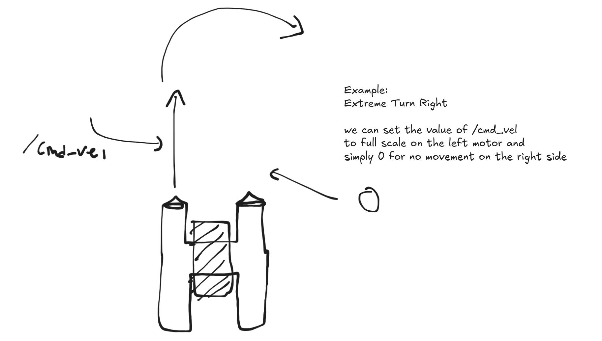

core_control
This section contains documentation for core_control package in the system.
Initial Idea:
Core Control Package acts as a utility package that provides essential functionalities and services that are commonly used across various components of the system. It includes modules for control, navigation, sensors, and communication.
Initial Structure:
- core_control/
microcontroller_asv.py // Microcontroller ASV control module, fetching data from Pixhawk to publishing it into ROS2 topics
microcontroller_rov.py // Microcontroller ROV control module, fetching data from Pixhawk to publishing it into ROS2 topics
Motor Configuration
{kind=link}
The idea is to manually set PWM through standarized ROS2 topic, /cmd_vel, which is used to control the ASV’s motors. The microcontroller will then convert these commands into appropriate PWM signals for the motors. Then the result would be configured movement template, like move_forward, move_backward, turn_left, turn_right, etc.
Motor Movement Example: Turn Right
{kind=link}
Motor Movement Example: Intensity
{kind=link}
Processing /cmd_vel topic
We can use this following process to adjust the efforts
Subscribe to the /cmd_vel topic to receive velocity commands.
Parse the incoming messages to extract linear and angular velocity values.
Map the velocity values to appropriate motor commands.
Publish the motor commands to the respective motor control topics.
Any Optimization Strat?
We can use the following process to optimize the motor control
Implement a PID controller to adjust motor speeds based on feedback from the core_perception package.
Use the feedback to fine-tune the motor commands for smoother and more accurate movements.
How PID Works?
A PID (Proportional-Integral-Derivative) controller is a control loop feedback mechanism widely used in industrial control systems. It calculates an “error” value as the difference between a desired setpoint and a measured process variable, and applies a correction based on proportional, integral, and derivative terms.
So THE question appears, which error value we should use? The error value can be derived from the difference between the desired position (setpoint) and the current position (measured process variable) of the ASV. This can be obtained from the feedback provided by the core_perception package, which processes sensor data to determine the ASV’s current position and orientation.
Moving to the next thing, what kind of sensor data we can use? The core_perception package can provide various sensor data, such as:
LIDAR data for obstacle detection and mapping (Upcoming feature)
Ultrasonic sensors for distance measurement (Upcoming feature)
GPS data for position tracking
IMU data for orientation and acceleration
Depth sensors for underwater navigation (ROV case, upcoming feature)
Camera data for visual feedback and obstacle detection (Error value can be derived from midpoint of the image, which is the center of the image, and the object position in the image, in the rectangular coordinates or we often call it bounding box)
{kind=link}
{kind=link}
Usage on Waypoint Navigation
We can also use 2 dimensional waypoint navigation, where the ASV / ROV can navigate to a series of predefined waypoints using the core_perception package for feedback and the core_control package for motor control.
Basically, we first need to fetch the XY coordinates of the self and waypoints from the core_perception package, then we can use the PID controller to adjust the motor speeds based on the feedback from the core_perception package. Then we can use the core_control package to control the motors to move towards the waypoints (Dont forget to use PID).

{kind=link}